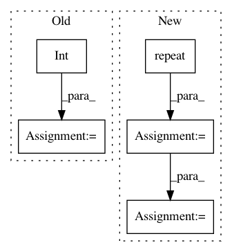

b09284f6ba59659a9819e68244a7a785016c87c5,art/attacks/evasion/shadow_attack.py,ShadowAttack,generate,#ShadowAttack#Any#Any#,119
Before Change
x_adv = np.zeros_like(x, dtype=ART_NUMPY_DTYPE)
// Compute perturbation with implicit batching
for i_batch in range(int(np.ceil(x.shape[0] / self.batch_size))):
batch_index_1, batch_index_2 = i_batch * self.batch_size, (i_batch + 1) * self.batch_size
x_batch = x[batch_index_1:batch_index_2]
y_batch = y[batch_index_1:batch_index_2]
perturbation = (
np.random.uniform(
low=self.estimator.clip_values[0], high=self.estimator.clip_values[1], size=x_batch.shape
).astype(ART_NUMPY_DTYPE)
- (self.estimator.clip_values[1] - self.estimator.clip_values[0]) / 2
)
for _ in range(self.nb_steps):
gradients_ce = self.estimator.loss_gradient(x=x_batch + perturbation, y=y_batch, sampling=False) * (
1 - 2 * int(self.targeted)
)
gradients = gradients_ce - self._get_regularisation_loss_gradients(perturbation)
perturbation += self.learning_rate * gradients
x_p = x_batch + perturbation
x_p = np.clip(x_p, a_min=self.estimator.clip_values[0], a_max=self.estimator.clip_values[1])
perturbation = x_p - x_batch
x_adv[batch_index_1:batch_index_2] = x_batch + perturbation
return x_adv
def _get_regularisation_loss_gradients(self, perturbation):
After Change
x = x.astype(ART_NUMPY_DTYPE)
x_batch = np.repeat(x, repeats=self.batch_size, axis=0)
x_batch = x_batch + np.random.normal(scale=self.sigma, size=x_batch)
y_batch = np.repeat(y, repeats=self.batch_size, axis=0)
perturbation = (
In pattern: SUPERPATTERN
Frequency: 3
Non-data size: 5
Instances
Project Name: IBM/adversarial-robustness-toolbox
Commit Name: b09284f6ba59659a9819e68244a7a785016c87c5
Time: 2020-05-24
Author: beat.buesser@ie.ibm.com
File Name: art/attacks/evasion/shadow_attack.py
Class Name: ShadowAttack
Method Name: generate
Project Name: HyperGAN/HyperGAN
Commit Name: 371ffe8f69e9f76978dd4254534285129f0f3d6c
Time: 2020-06-22
Author: martyn@255bits.com
File Name: examples/common.py
Class Name:
Method Name: distribution_accuracy
Project Name: nilearn/nilearn
Commit Name: 7af3a07a9fe836f3dc7350732dd71cb214853533
Time: 2015-12-04
Author: arthur.mensch@m4x.org
File Name: nilearn/decomposition/base.py
Class Name:
Method Name: mask_and_reduce